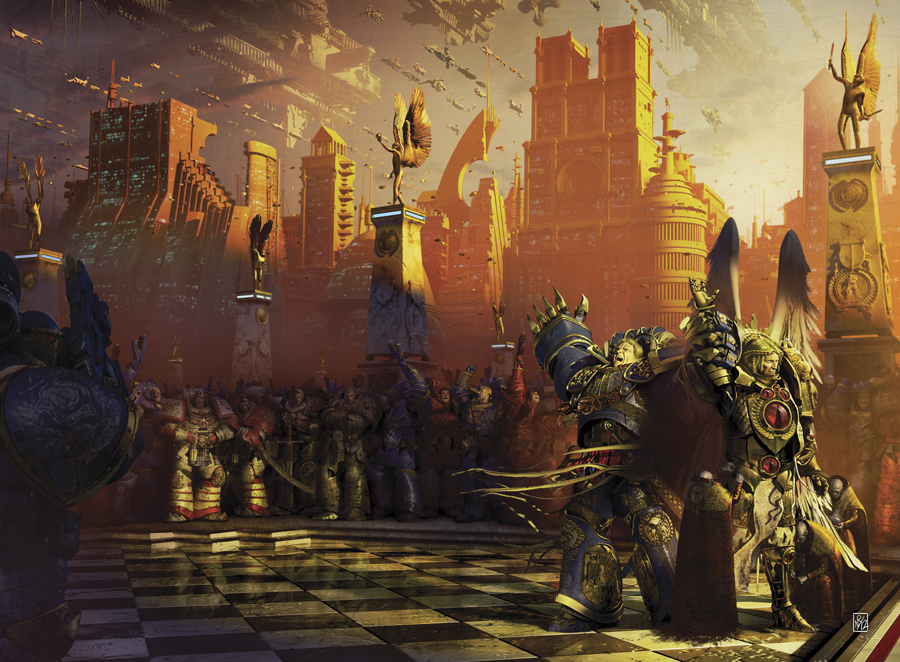

THE UNREMEMBERED EMPIRE

Author: Dan Abnett
Format: Novel
Cut off from Terra by warp storms, Guilliman gathers loyalist survivors on Macragge. New arrivals blur the line between friend and foe as he considers how to protect Ultramar and the wider Imperium.
Introduction reviewed against Black Library’s description on 2026-09-27. The publisher page may contain spoilers.
Publication facts: publisher source, checked 2026-09-26.
Open this work in the interactive Archive to track reading progress and explore related works.
Take the three-question memory check for this work. The quiz contains story spoilers.